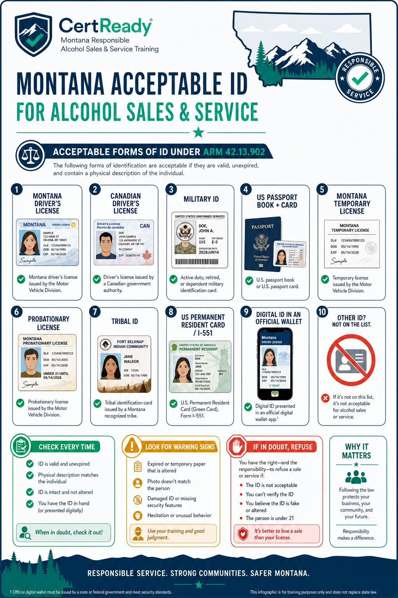
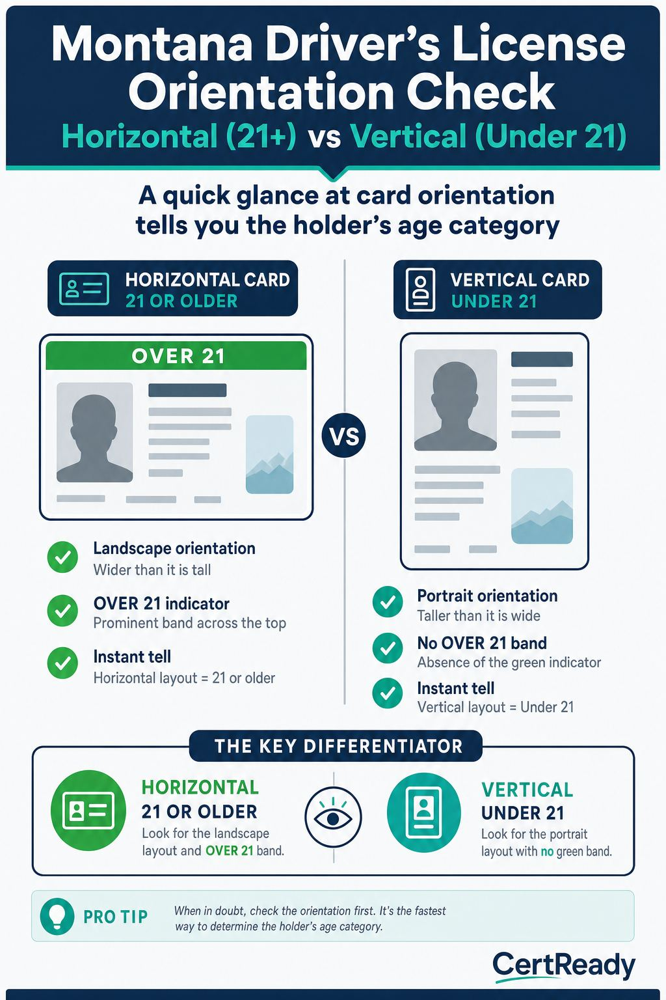
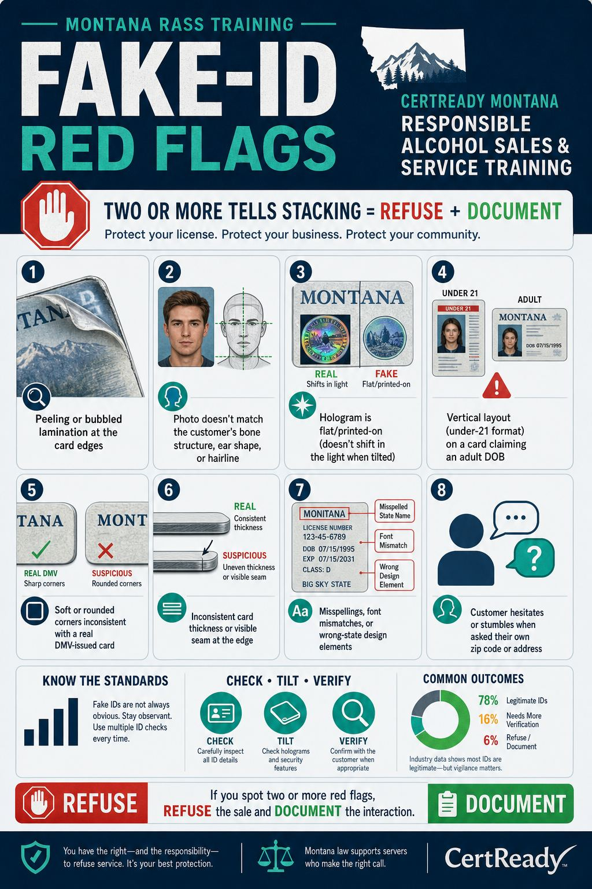

Montana ARM 42.13.902 lists exactly which IDs you may accept to verify age. The list is closed. If the customer hands you something that isn't on the list, you don't accept it - even if it has a photo, a DOB, and looks official.
Outcomes: K5
On-premises course module
Montana's acceptable ID list per ARM 42.13.902, with HB 196 digital IDs and tribal IDs
This page mirrors the student lesson content and infographics so Montana CARD can review it without using the CertReady LMS.
Montana ARM 42.13.902 lists exactly which IDs you may accept to verify age. The list is closed. If the customer hands you something that isn't on the list, you don't accept it - even if it has a photo, a DOB, and looks official.
Outcomes: K5

Outcomes: K5
**Montana tribal IDs
the seven federally recognized tribes:**
Blackfeet Nation
Chippewa Cree (Rocky Boy's Reservation)
Confederated Salish & Kootenai (Flathead Reservation)
Crow Tribe
Fort Belknap Indian Community (Assiniboine & Gros Ventre)
Fort Peck (Assiniboine & Sioux)
Northern Cheyenne A tribal ID issued by any of these tribes is acceptable under ARM 42.13.902. Out-of-state tribal IDs are NOT on the list
only IDs issued by federally recognized tribes located in Montana count.
Outcomes: K5
MCA 16-4-1006(1)(c) (HB 196): Curriculum must cover procedures for checking identification, including government-certified digital identification cards. Falsifying or fraudulently using a digital ID is a separate offense under MCA 16-6-305 (also amended by HB 196).
Outcomes: K5
What is NOT on the list:
School / college / university ID cards
Library cards
Costco, Sam's Club, or other warehouse-club cards
Voter registration cards
Birth certificates (no photo)
Photocopies or photos of any of the above
Expired ID of any kind
Out-of-state tribal IDs If the customer offers any of these, you must refuse. "It's all I have" is not a valid reason to make an exception.
Outcomes: K5
Outcomes: P3, P2
The DOB math, made easy.
Subtract 21 from the current year.
Use today's month and day.
Anyone whose DOB is after that date is under 21. Example for May 8, 2026: the cutoff DOB is May 8, 2005. Born May 8, 2005 or earlier = legal. Born May 9, 2005 or later = under 21.
Outcomes: P2
The vertical-vs-horizontal layout tell. Most US states issue licenses in horizontal layout for adults (21+) and vertical layout for minors (under 21) so a glance at orientation tells you the holder is provisionally underage. Montana follows this convention. Vertical license = check the DOB even more carefully. A horizontal license held by someone who looks young still gets the full inspection - but a vertical license should never be served without confirming the customer crossed 21 since the card was issued.

Outcomes: P3
A government-certified digital ID is a state-issued credential the customer holds in their phone - Apple Wallet, Google Wallet, or a state-specific app. It is NOT a screenshot of a license. It is NOT a third-party app like ID.me. Only a government-issued digital credential counts under HB 196.
Outcomes: P4, K5
Outcomes: P4
Falsifying a digital ID is a separate offense under MCA 16-6-305 (HB 196 amendment). Penalties stack on top of the underlying minor-in-possession charge. If you suspect a fake digital ID:
Refuse the sale.
Document the incident in the log.
Don't try to seize the phone or take a screenshot.
Call the manager.
Outcomes: K5, K6
Why Montana adopted digital IDs slowly. Many states moved on digital credentials in 2020-2022; Montana waited until HB 196 in 2025 in part because of a concern about handing servers a phone they couldn't fully inspect. The compromise the bill landed on: only government-certified credentials count, presented through the official wallet application (Apple Wallet, Google Wallet, or the state app). A screenshot or a photo of a license is explicitly NOT a digital ID under the rule. This matches how TSA and other regulated industries treat the same technology. A few practical implications for the server:
Don't accept a digital ID presented through a third-party app (e.g., "a wallet I built" or a generic image gallery). The credential must come from the wallet app or the state's own app.
If the customer is having trouble pulling up the credential, that is fine
give them time. The slow-presentation pattern is a known anti-fraud feature; legitimate digital IDs sometimes require a biometric prompt before they display.
Always present the verification mode (the wallet may flip the credential to a verifier view with extra security graphics). If you don't see a verifier view, the credential is not properly presented.
Outcomes: K5, P4
The DOB-math shortcut and the mistakes to avoid. The calculation is simple
today's date minus 21 years
but two common errors trip up new servers: Mistake #1: Forgetting the month/day. If today is May 8, 2026, the latest valid DOB is May 8, 2005. A DOB of May 9, 2005 means the customer is 20 years, 364 days old
under 21. New servers sometimes only check the year ("2005, so they're 21!") and miss the month/day. Always read all three parts of the DOB. Mistake #2: Trusting the customer's stated age. Customers will sometimes volunteer "I'm 22" or "I just turned 21 last month" to short-circuit the check. Ignore it. Do the math from the DOB on the ID. The customer's stated age is not a credential. A useful daily ritual: at the start of every shift, write today's cutoff DOB on a sticky note at the bar station. "Today's cutoff: May 8, 2005. DOBs ON or BEFORE this date are 21+." After a few shifts you'll do the math automatically, but the sticky note prevents end-of-night errors when fatigue makes mental math slippery. The leap-year edge case. If a customer's DOB is February 29, the legal age cutoff applies on February 28 in non-leap years and February 29 in leap years. Most state IDs simply treat the person as having a birthday on March 1 in non-leap years for administrative purposes, but if you ever see a February 29 DOB and today is February 28 or 29 of a non-leap year, take an extra moment to verify with a supervisor before serving.
Outcomes: P2, P3

Outcomes: P3, K6
The two-friends pattern. When two underage friends use a shared fake-ID pipeline, they often have rehearsed answers for the obvious questions (DOB, zip code) but fail on the second-tier questions: "What's the middle name?" or "What's your sister's name?" The pause-and-look-at-friend tell is a high-confidence fake-ID signal even when the card itself looks decent.
Outcomes: P3, K6
Outcomes: K6
The bathroom-pass watch. Walk the floor. If the same customer keeps ordering drinks but never has them in front of them when you swing back, follow the drink. The pass-off to a minor is the most common after-the-fact dram-shop violation in college towns. Document the moment you see the drink change hands.
Outcomes: P6
Refusing an ID at the door is the lowest-friction refusal in alcohol service. The customer hasn't ordered yet. There's no tab to dispute, no half-finished drink to take away. Get good at this and most of your refusal work is done before service starts.
Outcomes: P6
Outcomes: P6
Don't seize a suspected fake ID. Hand it back. Some bouncers grab the card and say "I'm keeping this." Keeping a suspected fake ID can create legal risk, including a possible property claim. The safer course is to hand it back, refuse, and document.
Hand the ID back.
Refuse entry / refuse service.
Document description, time, ID details (state, ID number, name).
Note the description of the customer for a possible police report. Let law enforcement decide what happens to the card
that's not the bartender's job.
Outcomes: P6
What is the customer's age, and can you serve them?
Scenario 1: The DOB math. A customer hands you a Montana driver's license. Photo matches the person. The DOB shows 03/15/2005. Today is May 8, 2026.
Outcomes: P2, P3
What's the right call?
Scenario 2: The digital ID that looks off. A customer presents a digital ID in Apple Wallet. The state seal is from Wisconsin. The photo is small and blurry. When you ask them to TAP to present, they say "it's loading" and just hold the static screen toward you.
Outcomes: P4, P6
The Montana on-premise bar sees a wider out-of-state distribution than the corner convenience store. Tourists driving up from Yellowstone and Glacier carry Wyoming, Idaho, Utah, Colorado, Washington, and Oregon licenses. Snowbird travelers heading to Big Sky carry Texas, Arizona, and California. Cross-border Canadian visitors carry Alberta, British Columbia, and Saskatchewan licenses. All of these are acceptable under ARM 42.13.902 if current, but each one has its own design quirks: the Idaho DL hologram sits in a different corner than the Montana one; the British Columbia license has its photo offset to the right; California now issues a federal-compliant card with a gold bear on the top right that is easily mistaken for a state seal. The single highest-leverage practice for on-premise staff is to spend a slow Tuesday afternoon studying actual current-design samples from each of the top 10 most-common out-of-state IDs you see. Print the reference cards, post them in the back hall, and reference them whenever a card you've never seen lands at the host stand. The 90-second study session is the cheapest insurance against an honest mistake that would otherwise produce a sale to a minor.
Outcomes: K5, P4
Tribal IDs from Montana's seven federally recognized tribes are on the acceptable list under ARM 42.13.902. Blackfeet Nation, Chippewa Cree (Rocky Boy's), Confederated Salish & Kootenai (Flathead), Crow, Fort Belknap (Assiniboine & Gros Ventre), Fort Peck (Assiniboine & Sioux), and Northern Cheyenne all issue photo IDs that count as valid Montana ID for alcohol-purchase purposes. The card design varies by tribe, and a server who has only ever seen one tribe's card may not recognize another tribe's. Two practical notes: (1) out-of-state tribal IDs are NOT on the Montana acceptable list - a Navajo Nation ID issued in Arizona, for example, does not satisfy ARM 42.13.902 even though it is a valid federal-government-recognized credential; (2) tribal IDs are sometimes refused inappropriately by undertrained staff because the design looks unfamiliar. That refusal is a service-discrimination problem and can attract attention from tribal liaison offices and the Montana Human Rights Bureau. The right move when an unfamiliar tribal ID appears is to verify against the printed reference, accept if it matches one of the seven recognized tribes, and refuse with the standard refusal script only if it doesn't (e.g., out-of-state tribal ID, or a card whose issuer you cannot identify).
Outcomes: K5, P4
The 'I work for the airline / I'm a doctor / I'm a state legislator' move. Periodically a customer will produce a credential that is not on the acceptable-ID list and ask you to accept it anyway: a TSA Known Traveler card, a state-bar attorney ID, a hospital staff badge, a US Capitol staff ID. None of these are on ARM 42.13.902. They may identify the person and they may show a photo, but the acceptable list is closed. Many of these credentials also do not show a date of birth at all, which means even if the design were acceptable, the DOB-verification step you need cannot be performed. The refusal script is the same as for any other off-list credential: 'Montana's list is specific - driver's license, passport, military ID, tribal ID, permanent resident card, or government-certified digital ID. I can't ring up alcohol on this one tonight.' Customers in this category sometimes escalate to the manager because the ask carries a status component; the manager's job is to back up the door staff, not to make exceptions. The progressive-penalty risk under ARM 42.13.101 does not change based on the customer's profession.
Outcomes: K5, P4
Passing score: 80%
Which of the following is NOT acceptable as ID under ARM 42.13.902?
Correct answer: c. A photocopy of the customer's driver's license
Outcomes: K5
What was added to Montana's acceptable-ID rules by HB 196 in October 2025?
Correct answer: a. Government-certified digital ID cards
Outcomes: K5
If today is May 8, 2026, what is the LATEST DOB on a customer's ID that still makes them legal to serve?
Correct answer: b. May 8, 2005
Outcomes: P2
A screenshot of a state ID on the customer's phone counts as a digital ID under HB 196.
Correct answer: false. False
Outcomes: P4
Name two physical signs that an ID might be fake.
Outcomes: P3, K6
If you suspect a digital ID has been falsified, what is the right immediate action?
Correct answer: b. Refuse the sale, hand the phone back, and document the incident in the log
Outcomes: P4, P6
A vertical-layout driver's license is typically issued to whom?
Correct answer: b. Holders under age 21
Outcomes: P3
How many federally recognized tribes in Montana issue tribal IDs that are acceptable under ARM 42.13.902?
Correct answer: c. 7
Outcomes: K5